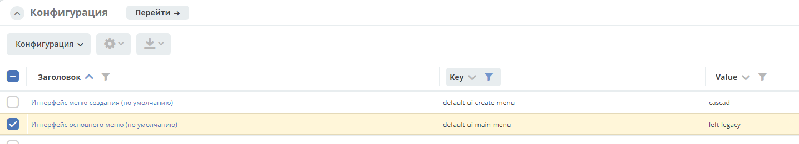
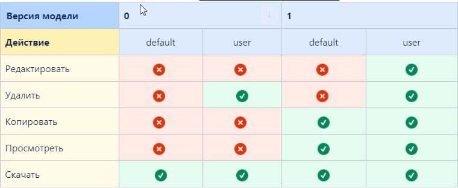
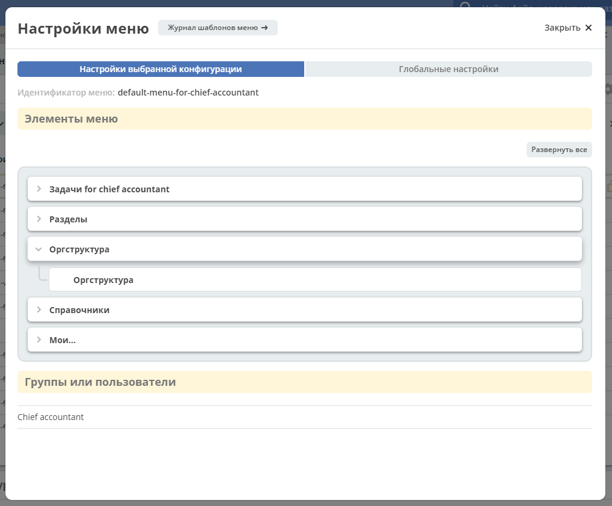
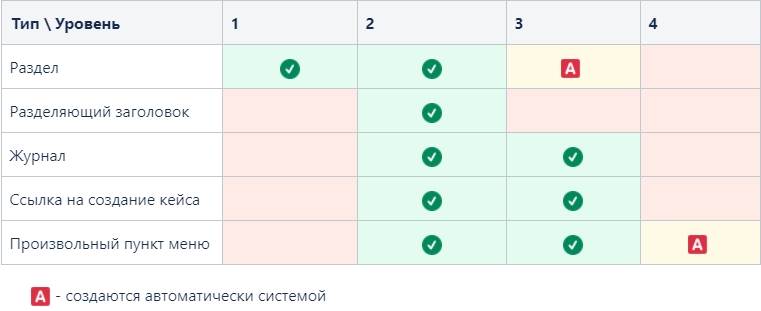
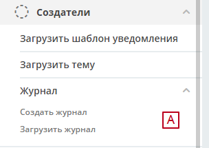

Настройка меню¶
Зависимости настроек¶
Важно
На отображение влияют настройки:
Интерфейс основного меню (Журнал Конфигурация) - глобальная настройка, для всего приложения и всех пользователей.
Приоритеты групп (Настройки меню > Глобальная настройка) - глобальная настройка для всех конфигураций и пользователей.
Группы или пользователи (Настройки меню > Текущая конфигурация) - принадлежность одной конфигурации меню.
Доступность раздела (Настройки меню > Настройки конфигурации > Элементы меню > Раздел) - принадлежность одного раздела пользователям.
Журнал Конфигурация
В журнале для настройки Интерфейс основного меню (default-ui-main-menu) устанавливается какой вариант (версия) меню будет использоваться в системе.
Значения:
left - нулевая версия конфигурации левого меню (не поддерживается просмотр и настройка через интерфейс).
left-v1 - первая версия конфигурации левого меню (поддерживается просмотр и редактирование).
Журнал Меню - все конфигурации меню
В журнале перечислены все конфигурации разных версий.
Доступность действий в журнале
Примечание
Для Интерфейс основного меню = left и Версия модели = 0 см. Menu service.
Настройка меню¶
Предупреждение
Интерфейсная настройка меню доступна только Администратору и значения настройки left-v1.
Способы открытия¶
Через шапку сайта иконка «Шестеренка» > Настроить меню.

Примечание
При использовании данного способа в окно настроек загружается конфигурация меню используемая на данный момент в интерфейсе. То есть в основном для настройки административного меню.
Через журнал Меню, инлайн действие Редактировать конфигурацию.
Окно настроек¶
Настройки содержат две вкладки:
Настройки выбранной конфигурации - описывает состояние отображаемого меню (элементы меню, версия, принадлежность и т.д.).
Глобальные настройки - то, что влияет на всю систему и всех пользователей (приоритеты).
Режим редактирования¶

Режим просмотра¶
Инлайн действие доступно через журнал Меню.
То же самое окно что при редактирования, но без элементов изменяющих представление.

Настройки выбранной конфигурации¶
Элементы меню¶
Возможные типы пунктов и их доступность на каждом уровне
Если добавлен пункт Ссылка на создание кейса и в результате есть возможность создавать несколькими способами в левом отобразится раздел с вариантами создания.
..table:: Доступность дополнительных характеристик:
Тип
1
2
3
Раздел
Без названия
Иконка
Разделяющий заголовок
Журнал
СчетчикИконка
Счетчик
Ссылка на создание кейса
Иконка
Произвольный пункт меню
Иконка
Подробнее о некоторых типах:
Журнал и Ссылка на создание кейса
Добавление пунктов осуществляется выбором элементов из журнала. Редактирование не доступно, только удаление. Необходимые сведения поступают из конфигурации элемента. Можно добавлять сразу несколько выбранных значений.
Ссылка на создание кейса - в настройке выбирается журнал, но в самом меню используются сами варианты создания записей в этом журнале. Варианты создания настраиваются в журнале Журналы > Редактировать нужный журнал > вкладка на форме Create Variants
Предупреждение
выбран журнал Файл уведомления, в меню отобразится пункт Загрузить шаблон уведомления;
выбран журнал Форма, в меню отобразится раздел Форма с пунктами Создать форму и Загрузить форму
Произвольный пункт меню
Ссылка - В зависимости от значения на выходе формируется соответствующий путь перехода. Под описанием поле выводится результат формируемой ссылки.
- info
Подробнее про Абсолютные и относительные ссылки.
Абсолютный URL - если указан полный путь. Ссылка будет открываться в новой вкладке браузера.
Относительный URL. Варианты формирования:
Если значение начинается с “ / ” , то итоговая ссылка формируется как хост + значение.

Если значение не начинается с “ / ”, то итоговая ссылка формируется как текущая ссылка в адресной строке + значение.
Предупреждение
Может привести к не ожидаемому результату.

Группы и пользователи¶
Выбор групп и пользователей, которым будет назначено редактируемое меню:
Пользователь имеет наивысший приоритет. Так же стоит учесть зависимости других настроек.
Если на пользователя/группу назначено несколько конфигураций, это может привести к неопределенному результату и появится не то меню, что ожидалось.
Установленные группы попадают в приоритет групп, по умолчанию в конец списка.
Глобальные настройки¶
Примечание
Данные настройки относятся ко всей системе.
Приоритеты групп¶
Список групп соответствует значениям групп, указанных во всех конфигурациях меню.
Приоритет группы обратно пропорционален уровню иерархии группы в Оргструктуре или уровню функциональной иерархии. Чем специфичнее и уже группа пользователей, тем выше у нее приоритет.
Группы администраторов, как правило, размещаются на первом месте.
Пользователь имеет наивысший приоритет (пользователи не отображаются в приоритетах).
Как это работает
В конфигурации меню указываются группы или пользователи для которых настраивается меню. Приоритет групп - настройка глобальная, исходя из ее настройки и указанных участников, возвращается соответствующее для пользователя меню.

АП - авторизованный пользователь,
АП - tam42 и он указан в одной из конфигураций. Указание пользователя - наивысший приоритет => возвращается конфигурация №10. Пользователь не должен указываться в нескольких.
АП состоит в группе администраторов (и не указан на прямую в конфигурации). Настраиваем конфигурацию с указанием этой группы. В настройке приоритетов эта группа на первом месте. Результат - слева отображается меню №3.
АП - главный клерк, состоит в 2х группах: клерки и главные клерки. Есть две конфигурации №2 и №6. В приоритетах главные клерки на 2 месте, другие на 3. Результат - слева отображается меню №6. Для Не главных клерков №2. если для АП нет ни одного подходящего меню - загружается базовое (default)
Редактор иконок¶
На выбор пользователю предоставлен набор системных иконок. Если в наборе нет подходящей, есть возможность загрузить собственную, которая появится в блоке Пользовательские. Наилучший вариант формата иконки - svg.
Иконка по умолчанию: